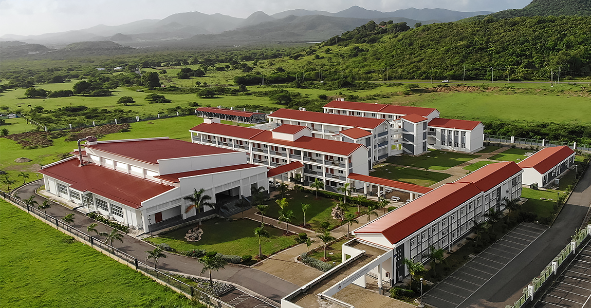

Jalique Gordon
My name is Jalique Gordon, a twenty-one year old second year at the University of the West Indies, Five Islands Campus. I'm currently pursuing a B.Sc in Information Technology, with the hopes of expanding my knowledge in the field of Tech, and potentially find myself with a position in one of its varying fields. My hobbies primarily include playing video games, writing and listening to music. I'm interested in Web Development because I believe it's a pivotal aspect of any business or organization, and possessing a skillset around it can potentially allow for significant commercial and personal value. 